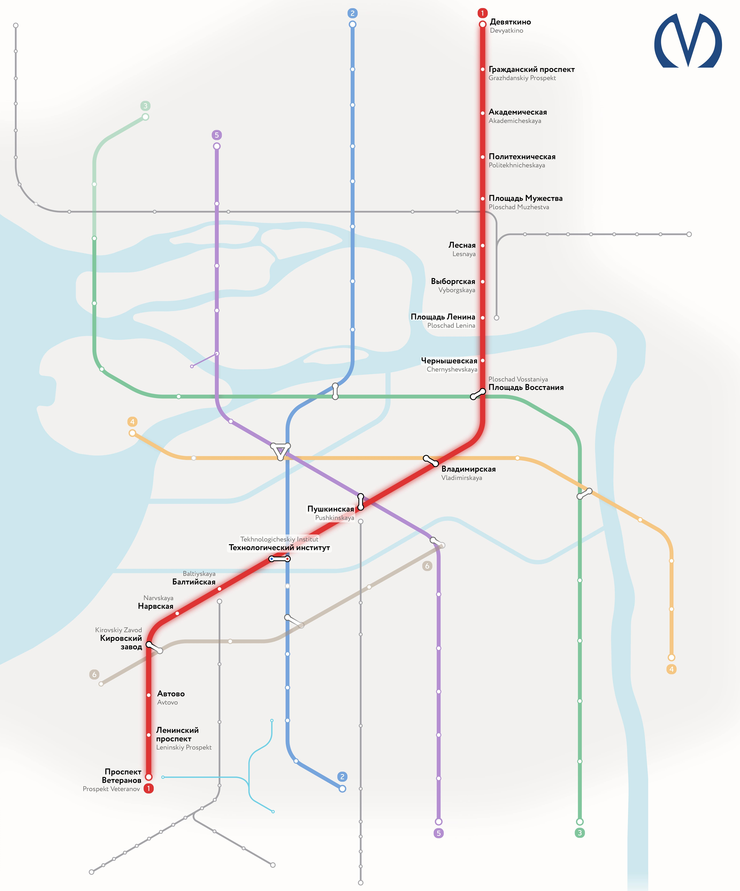

🚇 Кировско-Выборгская линия
Первая линия Петербургского метро. Открыта в 1955 году.
1. Девяткино
Конечная станция, расположена рядом с ж/д станцией «Девяткино».

2. Гражданский проспект
Открыта в 1978 году. Глубина заложения — 67 м.

19. Проспект Ветеранов
Конечная станция на юге города. Открыта в 1977 году.